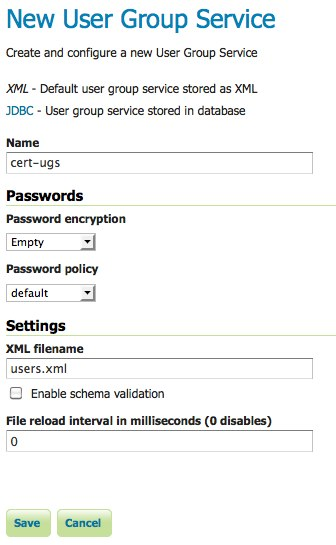
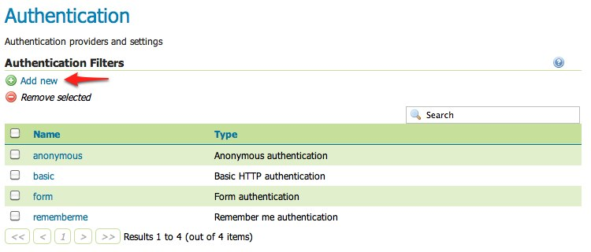
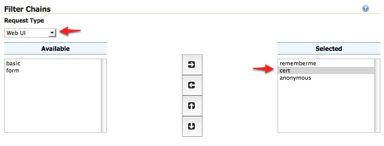
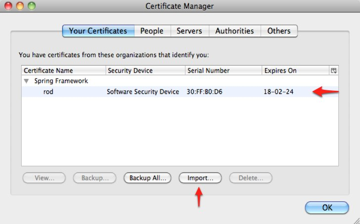

Configuring X.509 Certificate Authentication¶
인증서 인증(certificate authentication)은 기본적인 사용자명/비밀번호 체계를 이용하는 대신 신원을 확인해주는 공공/민간 키(key)를 사용하는 훨씬 안전한 방식을 제공합니다. X.509는 잘 정의된 공공 키 인증서 형식 표준입니다.
이 예제에서 X.509 인증서 인증을 설정하는 과정을 단계별로 설명합니다.
Prerequisites¶
이 예제에 다음과 같은 것들이 필요합니다.
- 인증 작업에 클라이언트 인증서를 이용할 수 있는 — “양 방향(two way) SSL”을 지원하는 — 웹 브라우저가 필요합니다. 이 예제에서는 Firefox를 사용합니다.
- SSL을 다룰 수 있는 서블렛 컨테이너가 필요합니다. 이 예제에서는 Tomcat을 사용합니다.
예제를 진행하기 전에 Tomcat에서 GeoServer를 실행하십시오.
Configure the user group service¶
GeoServer가 X.509 인증서로 인증받는 사용자를 설정해야 합니다. 이를 위해 새로운 사용자 그룹 서비스를 추가합니다.
admin 사용자로 웹 관리자 인터페이스에 로그인합니다.
사이드 메뉴의 Security 섹션 아래 있는 Users, Groups, and Roles 링크를 클릭하십시오.

User Group Services 패널로 스크롤해서 Add new 링크를 클릭하십시오.
“cert-ugs”라는 명칭으로 새로운 사용자 그룹 서비스를 생성하고, 설정 서식의 항목에 다음과 같이 입력하십시오.
- Password encryption에 “Empty”를 입력합니다. 비밀번호를 통해 인증받는 사용자가 아니기 때문입니다.
- Password policy에 “default”를 입력합니다.
저장하십시오.
Users, Groups, and Roles 페이지로 돌아와 cert-ugs 링크를 클릭하십시오.

Users 탭으로 이동해서 Add new user 링크를 클릭하십시오.

“rod”라는 새로운 사용자를 추가한 다음 ROLE_ADMINISTRATOR 롤을 할당합니다.

저장하십시오.
사이드 메뉴의 Security 섹션 아래 있는 Authentication 링크를 클릭하십시오.

Authentication Filters 패널로 스크롤해서 Add new 링크를 클릭하십시오.
X.509 링크를 클릭한 다음, 설정 서식의 항목에 다음과 같이 입력하십시오.
- Name에 “cert”를 입력합니다.
- Role source에 “User group service”를 입력하고 연계된 드롭다운 메뉴에서 “cert-ugs”를 선택합니다.

저장하십시오.
다시 Authentication 페이지로 돌아와 Filter Chain 패널로 스크롤합니다.
Request type 드롭다운 메뉴에서 “Web UI”를 선택합니다.
cert 필터를 선택한 다음 remeberme 필터 뒤로 옮깁니다.
저장하십시오.
Download sample certificate files¶
유효한 인증서를 생성하거나 얻어오는 방법은 이 예제의 범위를 넘어섭니다. 대신 Spring Security의 Sample applications에서 찾을 수 있는 샘플 파일을 사용합니다.
샘플 인증서 파일을 다운로드한 다음 압축을 풉니다. 이 ZIP 파일의 내용물은 다음과 같습니다.
- ca.pem —“Spring Security Test CA”가 발행한 인증기관(certificate authority, CA) 인증서입니다. 서버와 클라이언트 인증서에 서명하는 데 이 파일을 사용합니다.
- server.jks —Tomcat이 사용하는 서버 인증서 및 민간 키를 담고 있는 Java 키 저장소(keystore)로 SSL 연결 설정 시 사용자에게 제출됩니다.
- rod.p12 —웹 브라우저를 통해 클라이언트 인증 작업을 수행하는 데 쓰이는 클라이언트 인증서/키 조합을 담고 있습니다.
Configure Tomcat for SSL¶
Tomcat 루트 디렉터리의 conf 디렉터리로 server.jks 파일을 복사합니다.
Tomcat의 conf/server.xml 파일을 열어 다음과 같이 SSL 연결자(connector)를 추가합니다.
<Connector port="8443" protocol="HTTP/1.1" SSLEnabled="true" scheme="https" secure="true" clientAuth="true" sslProtocol="TLS" keystoreFile="${catalina.home}/conf/server.jks" keystoreType="JKS" keystorePass="password" truststoreFile="${catalina.home}/conf/server.jks" truststoreType="JKS" truststorePass="password" />이렇게 하면 8443 포트에 SSL을 활성화시킵니다.
Tomcat을 재시작하십시오.
Install the client certificate¶
Firefox 메뉴에서 Preferences를 선택한 다음 Advanced 패널로 이동합니다.
Encryption 탭으로 이동해서 View Certificates 버튼을 클릭합니다.

Your Certificates 패널에서 Import... 버튼을 클릭한 다음 파일 탐색기에서 rod.p12 파일을 선택합니다.
비밀번호 입력창이 뜨면 “password”를 입력합니다.
OK 버튼을 클릭한 다음 Preferences 창을 닫습니다.
Test certificate login¶
Firefox에서 “HTTPS”를 이용해 “8443” 포트 상의 GeoServer 웹 관리자 인터페이스 https://localhost:8443/geoserver/web 으로 이동합니다.
신원 확인창이 뜨면 “rod” 인증서를 선택합니다.

자기 서명한(self-signed) 서버 인증서라는 경고가 뜨면 Add Exception... 버튼을 클릭해서 보안 예외 사항으로 추가합니다.
rod 사용자가 GeoServer 웹 관리자 인터페이스에 로그인되었습니다.